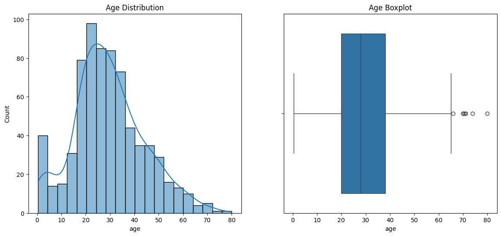

import pandas as pd
import numpy as np
import seaborn as sns
import matplotlib.pyplot as pltHandling Missing Data
Discover key workflows to analyze, delete, and impute missing variables in datasets using statistical methods and KNN imputation.
Introduction
In real-world datasets, missing values are a common occurrence due to data entry errors, system failures, or non-response in surveys. Properly handling these missing values is crucial because most machine learning algorithms cannot handle them natively, and incorrect handling can lead to biased models and inaccurate conclusions.
Common strategies for dealing with missing data include:
- Deletion: Removing rows or columns with missing values (e.g., listwise or pairwise deletion).
- Imputation: Replacing missing values with estimated values, such as the mean, median, mode, or using advanced techniques like K-Nearest Neighbors (KNN) and MICE.
- Encoding: flagging missingness as a distinct category or feature.
From the very beginning, we will explore them in practical.
df = sns.load_dataset('titanic')
df.head()| survived | pclass | sex | age | sibsp | parch | fare | embarked | class | who | adult_male | deck | embark_town | alive | alone | |
|---|---|---|---|---|---|---|---|---|---|---|---|---|---|---|---|
| 0 | 0 | 3 | male | 22.0 | 1 | 0 | 7.2500 | S | Third | man | True | NaN | Southampton | no | False |
| 1 | 1 | 1 | female | 38.0 | 1 | 0 | 71.2833 | C | First | woman | False | C | Cherbourg | yes | False |
| 2 | 1 | 3 | female | 26.0 | 0 | 0 | 7.9250 | S | Third | woman | False | NaN | Southampton | yes | True |
| 3 | 1 | 1 | female | 35.0 | 1 | 0 | 53.1000 | S | First | woman | False | C | Southampton | yes | False |
| 4 | 0 | 3 | male | 35.0 | 0 | 0 | 8.0500 | S | Third | man | True | NaN | Southampton | no | True |
Let’s see if there are any missing values in the dataset.
df.isnull().sum()survived 0
pclass 0
sex 0
age 177
sibsp 0
parch 0
fare 0
embarked 2
class 0
who 0
adult_male 0
deck 688
embark_town 2
alive 0
alone 0
dtype: int64We can see that the age, deck, embarked and embark_town columns have missing values. Now let’s see how we can handle them.
At first, we will see the simple elimination or deletion method.
1. Simple Elimination (Deletion)
When should we use deletion? We should use it on large datasets with a small percentage of missing values. Suppose we have a dataset with 1000 rows and only 50 rows have missing values. In that case, we can safely delete those 50 rows without losing much information. However, if a large portion of the dataset has missing values, deletion can lead to significant data loss and bias.
In a word, if we have 20% or less missing values, we can consider deletion.
At first, let’s see the size of the dataset.
df.shape(891, 15)If we delete the rows with missing values from age and deck columns, we will lose a significant portion of the dataset. So, we will only delete the rows with missing values from the embarked and embark_town columns. This will not affect our dataset much as only 2 rows have missing values in these columns.
df_cleaned = df.dropna(subset=['embarked', 'embark_town'])
df_cleaned.shape(889, 15)Look at the shape, two rows have been deleted from the dataset.
df_cleaned.isnull().sum()survived 0
pclass 0
sex 0
age 177
sibsp 0
parch 0
fare 0
embarked 0
class 0
who 0
adult_male 0
deck 688
embark_town 0
alive 0
alone 0
dtype: int642. Statistical Imputation(Mean, Median, Mode)
When should we use mean, median, or mode?
When we can numerical data, we can use mean or median. If we have categorical data, we can use mode. We should use mean when the data is normally distributed and does not have outliers. We should use median when the data is skewed or has outliers.
df_cleaned['age'].describe()count 712.000000
mean 29.642093
std 14.492933
min 0.420000
25% 20.000000
50% 28.000000
75% 38.000000
max 80.000000
Name: age, dtype: float64This data is slightly right-skewed, because the mean is greater than the median. We have outliers in the data. Let’s visualize.
plt.figure(figsize=(14, 6))
plt.subplot(1, 2, 1)
sns.histplot(df_cleaned['age'], kde=True)
plt.title('Age Distribution')
plt.subplot(1, 2, 2)
sns.boxplot(x=df_cleaned['age'])
plt.title('Age Boxplot')
plt.show()
So, we cannot use mean as it is affected by outliers. We will use median to impute the missing values in the age column.
from sklearn.impute import SimpleImputer
numeric_imputer = SimpleImputer(strategy='median')
df_cleaned = df_cleaned.copy()
df_cleaned['age'] = numeric_imputer.fit_transform(df_cleaned[['age']])df_cleaned.isnull().sum()survived 0
pclass 0
sex 0
age 0
sibsp 0
parch 0
fare 0
embarked 0
class 0
who 0
adult_male 0
deck 688
embark_town 0
alive 0
alone 0
dtype: int64Look the missing values in the age column have been imputed with the median value. Now, let’s focus on the deck column.
df_cleaned.info()<class 'pandas.core.frame.DataFrame'>
Index: 889 entries, 0 to 890
Data columns (total 15 columns):
# Column Non-Null Count Dtype
--- ------ -------------- -----
0 survived 889 non-null int64
1 pclass 889 non-null int64
2 sex 889 non-null object
3 age 889 non-null float64
4 sibsp 889 non-null int64
5 parch 889 non-null int64
6 fare 889 non-null float64
7 embarked 889 non-null object
8 class 889 non-null category
9 who 889 non-null object
10 adult_male 889 non-null bool
11 deck 201 non-null category
12 embark_town 889 non-null object
13 alive 889 non-null object
14 alone 889 non-null bool
dtypes: bool(2), category(2), float64(2), int64(4), object(5)
memory usage: 87.3+ KBLook deck is a categorical column with only 201 non-missing values. In work, we may need to drop this column but for the sake of practice, we will impute the missing values with the mode.
At first, which is the most frequent value in the deck column?
df_cleaned['deck'].value_counts()deck
C 59
B 45
D 33
E 32
A 15
F 13
G 4
Name: count, dtype: int64It is C with 59 occurrences. So, we will impute the missing values in the deck column with C.
categorical_imputer = SimpleImputer(strategy='most_frequent')
df_cleaned['deck'] = categorical_imputer.fit_transform(df_cleaned[['deck']]).flatten()
df_cleaned.isnull().sum()survived 0
pclass 0
sex 0
age 0
sibsp 0
parch 0
fare 0
embarked 0
class 0
who 0
adult_male 0
deck 0
embark_town 0
alive 0
alone 0
dtype: int64df_cleaned['deck'].value_counts()deck
C 747
B 45
D 33
E 32
A 15
F 13
G 4
Name: count, dtype: int643. Multivariate Imputation (IterativeImputer)
Rather than just guessing the median age, we can use other features like pclass (class) and fare to predict the missing age. This is an advanced imputation technique that considers the relationships between features to provide more accurate estimates for missing values. We will learn them in Machine Learning section.
from sklearn.experimental import enable_iterative_imputer
from sklearn.impute import IterativeImputer
it_imputer = IterativeImputer(random_state=42)
# We use relevant numerical columns to estimate the age
df[['age', 'pclass', 'fare']] = it_imputer.fit_transform(df[['age', 'pclass', 'fare']])df.isnull().sum()survived 0
pclass 0
sex 0
age 0
sibsp 0
parch 0
fare 0
embarked 2
class 0
who 0
adult_male 0
deck 688
embark_town 2
alive 0
alone 0
dtype: int64KNN Imputation
It is actually a distance-based imputation method that uses the K-Nearest Neighbors algorithm to impute missing values.
df = sns.load_dataset('titanic')from sklearn.impute import KNNImputer
knn_imputer = KNNImputer(n_neighbors=5)
df[['age']] = knn_imputer.fit_transform(df[['age']])df.isnull().sum()survived 0
pclass 0
sex 0
age 0
sibsp 0
parch 0
fare 0
embarked 2
class 0
who 0
adult_male 0
deck 688
embark_town 2
alive 0
alone 0
dtype: int64We will learn KNN imputation in the Machine Learning section.